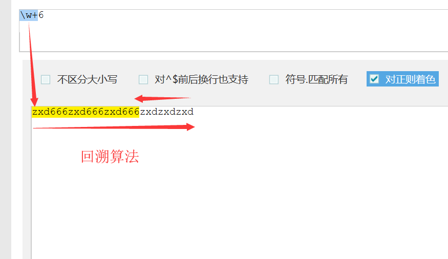
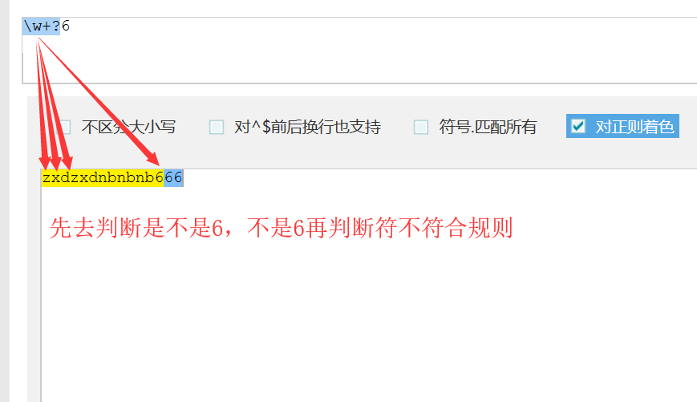

普通字符
普通字符包括：大小写字母、数字，在匹配普通字符的时候直接写就可以了，Python也能实现同样的效果，很简单
re模块，返回正则表达式匹配过滤出来的字符import re
s = "zxdnbzxdnb"
print(re.findall("zxd", s)) # 普通字符，直接写就好了
运行结果：
['zxd', 'zxd'] # 成功匹配过滤s = "zxdnbzxdnb"
print("zxd" in s) # 是否存在
print(s.count("zxd")) # 存在几个
print(["zxd"] * 2) # 打印出来就好了
运行结果：
True
2
['zxd', 'zxd'] # 实现同样的效果元字符
元字符才是正则表达式的灵魂所在，介绍部分内容:
字符组
字符组用[]表示，[]中出现的内容会被匹配到
例：匹配到字符串"zxdhnbzxdznbzxdtnb"中的"hnb" "znb" "tnb"
import re
s = "zxdhnbzxdznbzxdtnb"
print(re.findall("[hzt]nb", s))
运行结果：
['hnb', 'znb', 'tnb'] # 将字符串中含有"hnb"、"znb"、"tnb"的部分过滤出来[]还可填入一个范围，比如[0-9a-zA-Z]它可以匹配字符串中0到9，a到z，A到Z中的字符
例：匹配到字符串"zxd123456zxdznb"中的数字
import re
s = "zxd123456zxdznb"
print(re.findall("[0-9]", s))
运行结果：
['1', '2', '3', '4', '5', '6'] # 匹配到字符串中的0到9的数字范围遵循ascii码的从小到大规定，比如[A-z]可以匹配之间的所有字符，但[a-Z]只能匹配到a
import re
s = "asdzxcqwe123!@#"
print(re.findall("[A-z]", s))
print(re.findall("[a-Z]", s))
运行结果：
['a', 's', 'd', 'z', 'x', 'c', 'q', 'w', 'e'] # [A-z]匹配成功
sre_constants.error: bad character range a-Z at position 1 # [a-Z]报错字符组还可以反向过滤，在[]中加入^，比如[^123]它可以匹配字符串中除了123以外的所有字符
例：匹配到字符串"zxdznb123456789"中除数字以外的字符
import re
s = "zxdznb123456789"
print(re.findall("[^0-9]", s))
运行结果：
['z', 'x', 'd', 'z', 'n', 'b'] # 匹配到字符串中除数字以外的字符应用举例：通过匹配判断手机号输入是否正确（有点low的例子）
import re
number = input("手机号:")
if len(number) != 11:
print("手机号输入有误！")
else:
num = re.findall("[1][3-9][0-9][0-9][0-9][0-9][0-9][0-9][0-9][0-9][0-9]", number)
if not num:
print("手机号格式不正确！")
else:
print("手机号可以使用！")常用元字符（单一匹配）
| \w | 匹配字母（含中文）、数字、下划线 |
|---|---|
| \W | 匹配非字母（含中文）、数字、下划线 |
| \s | 匹配空白符 |
| \S | 匹配非空白符 |
| \d | 匹配数字 |
| \D | 匹配非数字 |
| \b | 匹配单词的边界 |
| \B | 匹配非单词的边界 |
| \A | 匹配字符串的开始 |
| ^ | 匹配字符串的开始 |
| \Z | 匹配字符串的结尾 |
| $ | 匹配字符串的结尾 |
| \n | 匹配一个换行符 |
| \t | 匹配一个制表符 |
| . | 匹配除换行符以外任意字符 |
| a|b | 匹配字符a或b |
| () | 分组，匹配括号内的表达式 |
| [] | 匹配字符组内的字符 |
| [^] | 匹配除字符组以外的字符 |
\w ：匹配字符串中字母（含中文）、数字、下划线
例：匹配到字符串"zxd123\n456！@#￥"中的字母和数字
import re
s = "zxd123\n456！@#￥"
print(re.findall("\w", s))
运行结果：
['z', 'x', 'd', '1', '2', '3', '4', '5', '6']\W ：匹配字符串中非字母（含中文）、数字、下划线
例：匹配到字符串"zxd123\n456！@#￥"中的非字母和数字的内容
import re
s = "zxd123\n456！@#￥"
print(re.findall("\W", s))
运行结果：
['\n', '！', '@', '#', '￥']\s ：匹配空白符（包含空格、制表符和换行符 ）
例：匹配到字符串"zxd \t123 \n456 ！@#￥"中的空白符
import re
s = "zxd \t123 \n456 ！@#￥"
print(re.findall("\s", s))
运行结果：
[' ', ' ', '\t', ' ', ' ', '\n', ' ', ' ']\S ：匹配非空白符
例：匹配到字符串"zxd \t123 \n456 ！@#￥"中非空白符的内容
import re
s = "zxd \t123 \n456 ！@#￥"
print(re.findall("\S", s))
运行结果：
['z', 'x', 'd', '1', '2', '3', '4', '5', '6', '！', '@', '#', '￥']\d ：匹配数字
例：匹配到字符串"zxd123456zxdznb"中的数字
import re
s = "zxd123456zxdznb"
print(re.findall("\d", s))
运行结果：
['1', '2', '3', '4', '5', '6']\D ：匹配非数字
例：匹配到字符串"zxd123456zxdznb"中的非数字的内容
import re
s = "zxd123456zxdznb"
print(re.findall("\D", s))
运行结果：
['z', 'x', 'd', 'z', 'x', 'd', 'z', 'n', 'b']\b ：匹配单词边界
例：匹配到字符串"周杰伦-麻花藤-潘长江-赵本山-林俊周-韩周鸿-周猩猩-周星"中所有姓周的人名
import re
s = "周杰伦-麻花藤-潘长江-赵本山-林俊周-韩周鸿-周猩猩-周星"
print(re.findall(r"\b周\w+", s))
运行结果：
['周杰伦', '周猩猩', '周星']\B ：匹配非单词边界
例：匹配到字符串"周杰伦-麻花藤-潘长江-赵本山-林俊周-韩周鸿-周猩猩-周星"中所有名带有周的人
import re
s = "周杰伦-麻花藤-潘长江-赵本山-林俊周-韩周鸿-周猩猩-周星"
print(re.findall(r"\w+\B周\w*", s))
运行结果：
['林俊周', '韩周鸿']\A ：匹配字符串的开头（不常用，知道就行）
例：匹配到字符串"zxdhnbzxdznb"的开头
import re
s = "zxdhnbzxdznb"
print(re.findall("\A\w", s))
运行结果：
['z']^ ：匹配字符串的开头（常用）
例：匹配到字符串"zxdhnbzxdznb"的开头
import re
s = "zxdhnbzxdznb"
print(re.findall("^\w", s))
运行结果：
['z']\Z ：匹配字符串的结尾（不常用，知道就行）
例：匹配到字符串"zxdhnbzxdznb"的结尾
import re
s = "zxdhnbzxdznb"
print(re.findall("\w\Z", s))
运行结果：
['b']$ ：匹配字符串的结尾（常用）
例：匹配到字符串"zxdhnbzxdznb"的结尾
import re
s = "zxdhnbzxdznb"
print(re.findall("\w$", s))
运行结果：
['b']^ 和 $ 结合使用时，两者之间的长度一定要和待匹配的字符串长度相同，否则匹配不上
import re
s = "zxdznb666"
print(re.findall("^zxdznb666$", s))
print(re.findall("^zxdznb$", s))
运行结果：
['zxdznb666']
[]^ 和 $ 的应用举例：通过匹配判断手机号输入是否正确（升级版，还是很low）
import re
number = input("手机号:")
num = re.findall("^[1][3-9][0-9][0-9][0-9][0-9][0-9][0-9][0-9][0-9][0-9]$", number) # 匹配到以1开头，以0到9结尾的一串11位数字
if not num:
print("手机号格式不正确！")
else:
print("手机号可以使用！")\n ：匹配换行符
例：匹配到字符串"zxd \t123 \n456 ！@#$"中的换行符
import re
s = "zxd \t123 \n456 ！@#$"
print(re.findall("\n", s))
运行结果：
['\n']\t ：匹配制表符
例：匹配到字符串"zxd \t123 \n456 ！@#$"中的制表符
import re
s = "zxd \t123 \n456 ！@#$"
print(re.findall("\t", s))
运行结果：
['\t']. ：匹配除换行符任意的字符，当指定re.DOTALL时，可以匹配含换行符以内的任意字符
例：匹配字符串"zxd123\n456"中所有内容（含换行符|不含换行符)
import re
s = "zxd123\n456"
print(re.findall(".", s))
print(re.findall(".", s, re.DOTALL))
运行结果：
['z', 'x', 'd', '1', '2', '3', '4', '5', '6']
['z', 'x', 'd', '1', '2', '3', '\n', '4', '5', '6']a|b ：匹配字符a或b，优先匹配前面，只要前面匹配到了后面就不看了，继续向下匹配
例：匹配到字符串"zxdnb666zxd"中的zxd 和666
import re
s = "zxdnb666zxd"
print(re.findall("zxd|666", s))
运行结果：
['zxd', '666', 'zxd']() ：分组，匹配括号内的表达式，可以在括号两端增加限制
例：匹配到字符串"zxdnb66zxd66zxd"中的zxd，只匹配到66中间的zxd
import re
s = "zxdnb66zxd66zxd"
print(re.findall("(zxd)", s))
print(re.findall("66(zxd)66", s))
运行结果：
['zxd', 'zxd', 'zxd']
['zxd'][] ：匹配字符组范围内的字符
[^] ：匹配非字符组范围内的字符
量词（多个匹配）
| ***** | 重复零次或更多次 |
|---|---|
| + | 重复一次或更多次 |
| ？ | 重复零次或一次 |
| {n} | 重复n次 |
| {n,} | 重复n次或更多次 |
| {n,m} | 重复n到m次 |
import re
s = "zxdnb66zxd66zxd"
print(re.findall("6*", s))
运行结果：
['', '', '', '', '', '66', '', '', '', '66', '', '', '', '']import re
s = "zxdnb66zxd66zxd"
print(re.findall("6+", s))
运行结果：
['66', '66']import re
s = "zxdnb66zxd66zxd"
print(re.findall("6?", s))
运行结果：
['', '', '', '', '', '6', '6', '', '', '', '6', '6', '', '', '', '']import re
s = "zxdnb66zxd66zxd"
print(re.findall("\w{3}", s))
运行结果：
['zxd', 'nb6', '6zx', 'd66', 'zxd']import re
s = "zxdnb66-zxd-6-6zxd"
print(re.findall("\w{3,}", s))
运行结果：
['zxdnb66', 'zxd', '6zxd']import re
s = "zxdnb66-zxd-6-6zxd"
print(re.findall("\w{3,5}", s))
运行结果：
['zxdnb', 'zxd', '6zxd']import re
number = input("手机号:")
num = re.findall("^[1][3-9][0-9]{9}$", number) # 匹配到以1开头，以0到9结尾的一串11位数字
if not num:
print("手机号格式不正确！")
else:
print("手机号可以使用！")贪婪匹配和非贪婪匹配（惰性匹配）
贪婪匹配：尽可能多的匹配，量词中的 * + {} 都是贪婪匹配
import re
s = "zxdznb666"
print(re.findall("\w*", s))
print(re.findall("\w+", s))
print(re.findall("\w{1,3}", s))
运行结果：
['zxdznb666', '']
['zxdznb666']
['zxd', 'znb', '666']
非贪婪匹配（惰性匹配）：尽可能少的匹配，量词中的 ? 是非贪婪匹配
import re
s = "zxdznb666"
print(re.findall("\w{1,3}?", s))
运行结果：
['z', 'x', 'd', 'z', 'n', 'b', '6', '6', '6']
转义：定义规则时，会遇到类似于\n这样的具有特殊意义的词，可以使用转义表示，转义有两种方式：
\\nr"\n"核心方法：
| re.findall() | 按规则查找，返回list |
|---|---|
| re,finditer() | 按规则查找，返回一个迭代器，通过group方法取值 |
| re.search() | 任意位置匹配，匹配到就返回结果，没匹配上返回None |
| re.match() | 只能从字符串开头开始匹配，匹配到就返回结果，匹配不到返回None |
re.findall()
findall(pattern, string, flags=0)import re
s = "zxd123\n456！@#￥"
print(re.findall("\w", s))
运行结果：
['z', 'x', 'd', '1', '2', '3', '4', '5', '6']re,finditer()
finditer(pattern, string, flags=0)import re
s = "zxd"
it = re.finditer("\w", s)
for el in it:
print(el.group())
运行结果：
z
x
dre.search()
search(pattern, string, flags=0)import re
s = "zxdnb66-zxd-6-6zxd"
print(re.search(r"\w+", s).group())
运行结果：
zxdnb66?P<名称>import re
s = "<h1>hello</h1>"
ret = re.search("<(?P<h>\w+)>(?P<h1>\w+)</(?P<h2>\w+)>",s)
print(ret.group("h"))
print(ret.group("h1"))
print(ret.group("h2"))
运行结果：
h1
hello
h1re.match()
match(pattern, string, flags=0)import re
s = "zxdnb66-zxd-6-6zxd"
print(re.match(r"\w+", s).group())
s = "-zxdnb66-zxd-6-6zxd"
print(re.match(r"\w+", s))
运行结果：
zxdnb66
None其他方法
| re.split() | 可按照任意分隔符进行分隔 |
|---|---|
| re.sub() | 替换 |
| re.compile() | 编译规则 |
re.split()
split(pattern, string, maxsplit=0, flags=0)import re
s = "zxd-nb-666-777-888"
print(re.split("-", s))
print(re.split("(-)", s))
print(re.split("-", s, maxsplit=2))
运行结果：
['zxd', 'nb', '666', '777', '888']
['zxd', '-', 'nb', '-', '666', '-', '777', '-', '888']
['zxd', 'nb', '666-777-888']re.sub()
sub(pattern, repl, string, count=0, flags=0)import re
s = "zxd-nb-666-777-888"
print(re.sub("-", "|", s))
print(re.sub("-", "|", s, 2))
运行结果：
zxd|nb|666|777|888
zxd|nb|666-777-888re.compile()
compile(pattern, flags=0)import re
s = "zxd-nb-666-777-888"
obj = re.compile("\w+")
print(obj.findall(s))
运行结果：
['zxd', 'nb', '666', '777', '888']print打印出来，这就可以通过日志显示和记录logging模块的使用：
日志分级
| 日志分级 | 对应解释 | 级别数值 |
|---|---|---|
| debug | 调试 | 10 |
| info | 信息 | 20 |
| warning | 警告 | 30 |
| error | 错误 | 40 |
| critical | 危险 | 50 |
函数式简单配置
import logging
logging.debug('debug message') # 调试
logging.info('info message') # 信息
logging.warning('warning message') # 警告
logging.error('error message') # 错误
logging.critical('critical message') # 危险
运行结果：
WARNING:root:warning message
ERROR:root:error message
CRITICAL:root:critical message说明：
warning、error、critical三个级别的日志信息，logging模块默认从warning级别（30）的日志开始输出通过日志配置函数 logging.basicConfig() 可以调整输出级别、日志内容等信息，配置函数如下：
basicConfig(**kwargs)| filename | 指定文件，日志内容将会存储在文件中 |
|---|---|
| filemode | 文件打开方式，指定了filename后才能指定，默认为"a" |
| format | 日志显示格式，参数如下 |
| datefmt | 时间显示格式 |
| level | 日志级别 |
| %(name)s | Logger的名字 |
|---|---|
| %(levelno)s | 数字形式的日志级别 |
| %(levelname)s | 文本形式的日志级别 |
| %(pathname)s | 调用日志输出函数的模块的完整路径名，可能没有 |
| %(filename)s | 调用日志输出函数的模块的文件名 |
| %(module)s | 调用日志输出函数的模块名 |
| %(funcName)s | 调用日志输出函数的函数名 |
| %(lineno)d | 调用日志输出函数的语句所在的代码行 |
| %(created)f | 当前时间，用UNIX标准的表示时间的浮点数表示 |
| %(relativeCreated)d | 输出日志信息时，自Logger创建以来的毫秒数 |
| %(asctime)s | 字符串形式的当前时间。默认格式是 “2003-07-08 16:49:45,896”。 |
| %(thread)d | 线程ID。可能没有 |
| %(threadName)s | 线程名。可能没有 |
| %(process)d | 进程ID。可能没有 |
| %(message)s | 用户输出的消息 |
import logging
logging.basicConfig(level=logging.DEBUG, # 调整日志输出等级
format="Time:'%(asctime)s' FilePath:'%(pathname)s' [line:%(lineno)d] %(levelname)s Message:'%(message)s'",
datefmt='%Y-%m-%d %H:%M:%S')
logging.debug('debug message')
logging.info('info message')
logging.warning('warning message')
logging.error('error message')
logging.critical('critical message')
运行结果：
Time:'2019-10-03 15:09:06' FilePath:'D:/python_S26/day17/exercise.py' [line:226] DEBUG Message:'debug message'
Time:'2019-10-03 15:09:06' FilePath:'D:/python_S26/day17/exercise.py' [line:227] INFO Message:'info message'
Time:'2019-10-03 15:09:06' FilePath:'D:/python_S26/day17/exercise.py' [line:228] WARNING Message:'warning message'
Time:'2019-10-03 15:09:06' FilePath:'D:/python_S26/day17/exercise.py' [line:229] ERROR Message:'error message'
Time:'2019-10-03 15:09:06' FilePath:'D:/python_S26/day17/exercise.py' [line:230] CRITICAL Message:'critical message'列举三个应用，理解日志的用法
logging.debug()的应用import logging
logging.basicConfig(level=logging.DEBUG, # 这里可以通过修改输出等级来控制需要调试的时候输出
format="Time:'%(asctime)s' FilePath:'%(pathname)s' [line:%(lineno)d] %(levelname)s Message:'%(message)s'",
datefmt='%Y-%m-%d %H:%M:%S')
lst = list()
for el in range(5):
lst.append(el)
logging.debug(lst)
print(lst)
运行结果：
[0, 1, 2, 3, 4] # 并发问题导致先输出lst
Time:'2019-10-03 17:16:49' FilePath:'D:/python_S26/day17/exercise.py' [line:239] DEBUG Message:'[0]'
Time:'2019-10-03 17:16:49' FilePath:'D:/python_S26/day17/exercise.py' [line:239] DEBUG Message:'[0, 1]'
Time:'2019-10-03 17:16:49' FilePath:'D:/python_S26/day17/exercise.py' [line:239] DEBUG Message:'[0, 1, 2]'
Time:'2019-10-03 17:16:49' FilePath:'D:/python_S26/day17/exercise.py' [line:239] DEBUG Message:'[0, 1, 2, 3]'
Time:'2019-10-03 17:16:49' FilePath:'D:/python_S26/day17/exercise.py' [line:239] DEBUG Message:'[0, 1, 2, 3, 4]'logging.info()的应用import logging
logging.basicConfig(level=logging.INFO,
format="Time:'%(asctime)s' FilePath:'%(pathname)s' [line:%(lineno)d] %(levelname)s Message:'%(message)s'",
datefmt='%Y-%m-%d %H:%M:%S')
userinfo = dict()
user = input("账号:")
pwd = input("密码:")
userinfo[user] = pwd
logging.info(f"注册的账号:{user},注册的密码:{pwd}") # 记录程序运行时的信息
运行结果：
账号:zxd
密码:zxd123
Time:'2019-10-03 17:35:07' FilePath:'D:/python_S26/day17/exercise.py' [line:251] INFO Message:'注册的账号:zxd,注册的密码:zxd123'logging.error()的应用import logging
logging.basicConfig(level=logging.INFO,
format="Time:'%(asctime)s' FilePath:'%(pathname)s' [line:%(lineno)d] %(levelname)s Message:'%(message)s'",
datefmt='%Y-%m-%d %H:%M:%S')
try:
def division(a, b):
c = a / b
return c
division(3, 0)
except ZeroDivisionError:
print("除数不能为0")
logging.error("输入除数为0")
运行结果：
除数不能为0
Time:'2019-10-03 17:51:46' FilePath:'D:/python_S26/day17/exercise.py' [line:266] ERROR Message:'输入除数为0'函数式简单配置有两个弊端：
logger对象配置
import logging
logger = logging.getLogger()
# 创建一个logger对象，用来操作日志
fh = logging.FileHandler("log.log", encoding="utf-8")
# 创建一个文件管理操作符，用来写入文件
sh = logging.StreamHandler()
# 创建一个屏幕管理操纵符， 用来屏幕显示
fmt = logging.Formatter("Time:'%(asctime)s' FilePath:'%(pathname)s' [line:%(lineno)d] %(levelname)s Message:'%(message)s'")
# 创建一个日志输出的格式
fh.setFormatter(fmt)
# 将文件管理操作符与输出格式进行绑定
sh.setFormatter(fmt)
# 将屏幕管理操作符与输出格式进行绑定
logger.addHandler(fh)
# 将logger对象与文件管理操作符进行绑定
logger.addHandler(sh)
# 将logger对象与屏幕管理操作符进行绑定
logger.setLevel(logging.DEBUG)
# 调整日志输出级别
logger.debug('debug message')
logger.info('info message')
logger.warning('warning message')
logger.error('error message')
logger.critical('critical message')
运行结果：
Time:'2019-10-03 18:31:18,217' FilePath:'D:/python_S26/day17/exercise.py' [line:283] DEBUG Message:'debug message'
Time:'2019-10-03 18:31:18,217' FilePath:'D:/python_S26/day17/exercise.py' [line:284] INFO Message:'info message'
Time:'2019-10-03 18:31:18,217' FilePath:'D:/python_S26/day17/exercise.py' [line:285] WARNING Message:'warning message'
Time:'2019-10-03 18:31:18,217' FilePath:'D:/python_S26/day17/exercise.py' [line:286] ERROR Message:'error message'
Time:'2019-10-03 18:31:18,218' FilePath:'D:/python_S26/day17/exercise.py' [line:287] CRITICAL Message:'critical message'